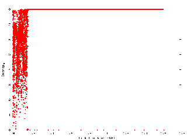
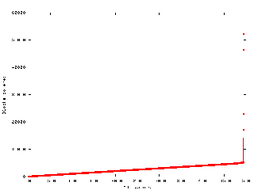

Rdd does not make plots itself. Rdd produces files that contain the
information to generate plots from. The scripts plot-entropy.py
and plot-md5.py produce the plots. These scripts
are written in the Python scripting language. You can freely download
Python and view the documentation on Python
here.
Both scripts use Gnuplot to draw the plot. You must have Gnuplot installed to draw the plots. You can freely download Gnuplot and view the documentation on Gnuplot here.
The plot-entropy script builds a plot of the entropy of
all blocks that are read by rdd. The plot is displayed or saved as a
PNG graphics file. To let the script display the plot you need to have
a running X-window environment.
The usage of plot-entropy:
plot-entropy <options> infile [lo hi]
infile: This is the input file, the file
rdd generated.lo: This is the first block of the optional
range of blocks to be plotted.hi: This is the last block of the optional
range of blocks to be plotted.The options:
-o: The PNG output file. If an output file is
given, the script will not try to draw the plot on the
screen.-t: This will be the title of the plot. This
not the filename of the PNG file.-b: This is the blocksize rdd used to
calculate the entropy on a block. The script needs this
blocksize to correctly print the locations of the blocks
of which the entropies are calculated.-x: This is the name of an optional file that
contains a list of blocks that must not be plotted.An example:
# rdd-copy -h 32768 -H entropy.txt
# plot-entropy -o entropy-plot.png -t "Entropy plot of suspect's
harddisk" -b 32768 entropy.txt
This will make a PNG file with a plot of all blocks rdd read. The title will be "Entropy plot of suspect's harddisk". We specify that rdd used a blocksize of 32768 bytes.
Making an MD5 plot is very similar to making an entropy plot, although the script has fewer options. Please refer to 'Making an entropy plot'.
The entropy plot is straightforward. The X axis covers all blocks in the image. The Y axis covers the entropy values. The entropy ranges from 0 to 8, where 8 stands for high entropy and 0 stands for low entropy. Every block of which the entropy has been calculated is plotted with a '+' symbol.

Figure 1: An entropy plot
This is an example of an entropy plot. The first 0.17 GB contains data with various entropy levels. This indicates lots of different types of data. The rest of the disk contains data with a very high entropy. This could be a crypto container or a heavily compressed file.
Correctly interpreting the block-MD5 plot is more difficult. In the block-MD5 plot the X axis covers the number of unique MD5 hash values of blocks. The Y axis covers the number of blocks that are covered by a single hash value. The Y axis is cummulative, which means every new value is added to the values that are already processed.

Figure 2: A block-MD5 plot
This is an example of a block-MD5 plot. The plot consists roughly of 2 straight lines. The left line shows that approximately 4900 different MD5 hash values on the X axis are used to cover approximately 4900 blocks on the Y axis. This means that all these 4900 blocks from the image have a different MD5 hash value. From (4900, 4900) on the line goes straight up. This line tells us that only 8 MD5 hash values are used to cover appox. 47000 blocks (52000 - 4900). This means that these 47000 blocks contain a lot of duplicated information. The block-MD5 plot is a cumulative plot and gives no information on the locations of the plotted blocks on the evidence material.
Both plots are actually from the same harddisk drive. By looking only to the entropy plot you might assume that you are dealing with some kind of crypto container or a large, heavily compressed file. By combining both plots you see that the blocks of the disk with a high entropy are covered by just 8 blocks. You might want to put your effort in the other part of the harddisk drive first.
The plots are meant to give an indication on the type of data on a disk. They are not intended to be used as a strict rule out mechanism to limit the amount of data to process. A low entropy does not guarantee that there is no important evidence nor does a high entropy guarantee data worth a deeper investigation.
{kind=link}
{kind=link}